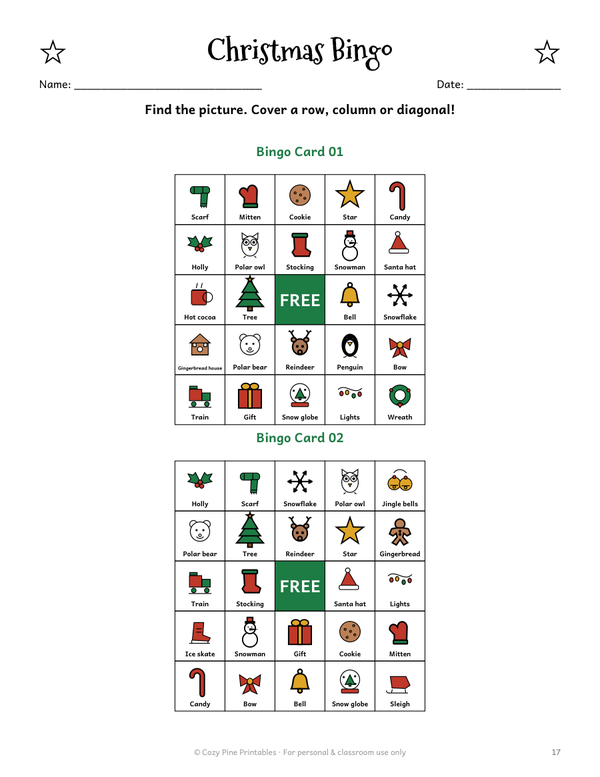
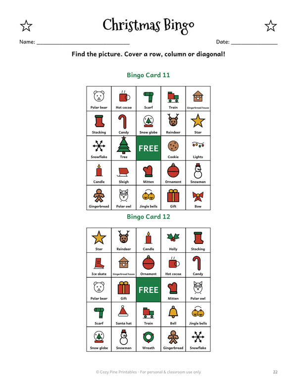
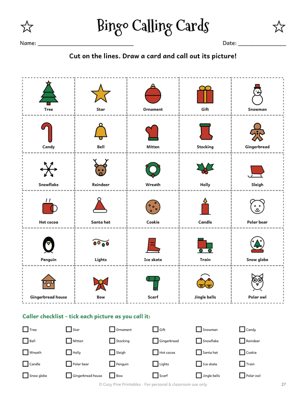
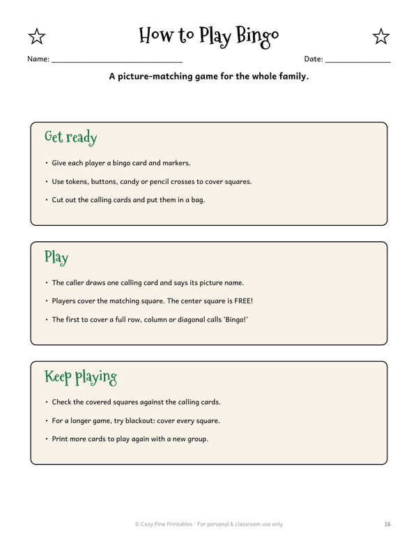
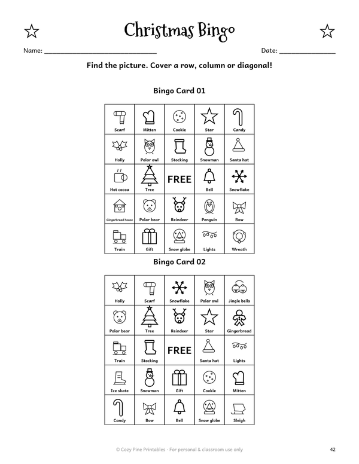

Christmas Bingo Printable for Kids
Picture bingo · 20 player cards + calling cards · ages 3–8
Christmas bingo is an easy game for a class party, church group or family evening. With picture squares, even kids who cannot read yet can join in. Every square has a Christmas picture and a small label, so non-readers match pictures and early readers practice words like scarf, mitten and snowman.
The bingo set has 20 different 5x5 player cards with a free space in the center, 30 calling cards to cut out, a caller checklist and a one-page how-to-play. It comes in full color and in an ink-saving black-and-white version.
The bingo cards are in the full Christmas Games Pack. To try the games first, download a free I Spy page and an indoor scavenger hunt:
⬇ Download the free I Spy + scavenger hunt (US Letter PDF) ⬇ Download the free I Spy + scavenger hunt (A4 PDF)Free PDF includes:
- 1 easy I Spy page + answer key
- Indoor Christmas scavenger hunt with pictures
A look at the bingo pages





How to play Christmas bingo
Give every player a card and some markers. Tokens, buttons, candy or pencil crosses all work. Cut out the calling cards and put them in a bag.
The caller draws one calling card at a time and says the name of the picture. Players cover the matching square, and the center square is free. The first player to cover a full row, column or diagonal calls "Bingo!"
For a longer game, try blackout: cover every square on the card.
What is in the bingo set
The 30 pictures include a tree, star, ornament, gift, snowman, candy cane, bell, mitten, stocking, gingerbread, reindeer, wreath, polar bear, penguin, train, snow globe and more. Each calling card matches pictures on the player cards.
Because there are 20 different cards, a group can play together without everyone holding the same card. You can also print extra copies to play again with a new group.
Bingo is part of the Christmas Games Pack, together with I Spy pages and scavenger hunts.
Christmas Games Pack: I Spy, Scavenger Hunt & Bingo

- 6 I Spy pages in 3 levels (easy → hard) with answer keys
- 5 scavenger hunts: indoor picture hunt, Christmas lights hunt, color hunt, hunt with rhyming clues, make-your-own
- Color and ink-saving black & white versions
- Christmas bingo: 20 player cards + calling cards
- US Letter & A4 · instant PDF download
$5.00
Get all the Christmas games →Ways to play
- Read the labels aloud for children who are not reading yet.
- Use the black-and-white pages to save ink for a big class.
- Slip a card into a page protector and use a dry-erase marker so it can be played again.
- Never hide small candy tokens within reach of very young children.
Frequently asked questions
How many bingo cards are included?
20 different 5x5 player cards in color, the same 20 in black and white, and 30 calling cards with a caller checklist, in US Letter and A4.
Do kids need to read to play?
No. Every square has a picture as well as a label, so children can match the picture the caller names.
Can I use it in my classroom?
Yes, for personal and classroom use. Please do not resell or share the files.